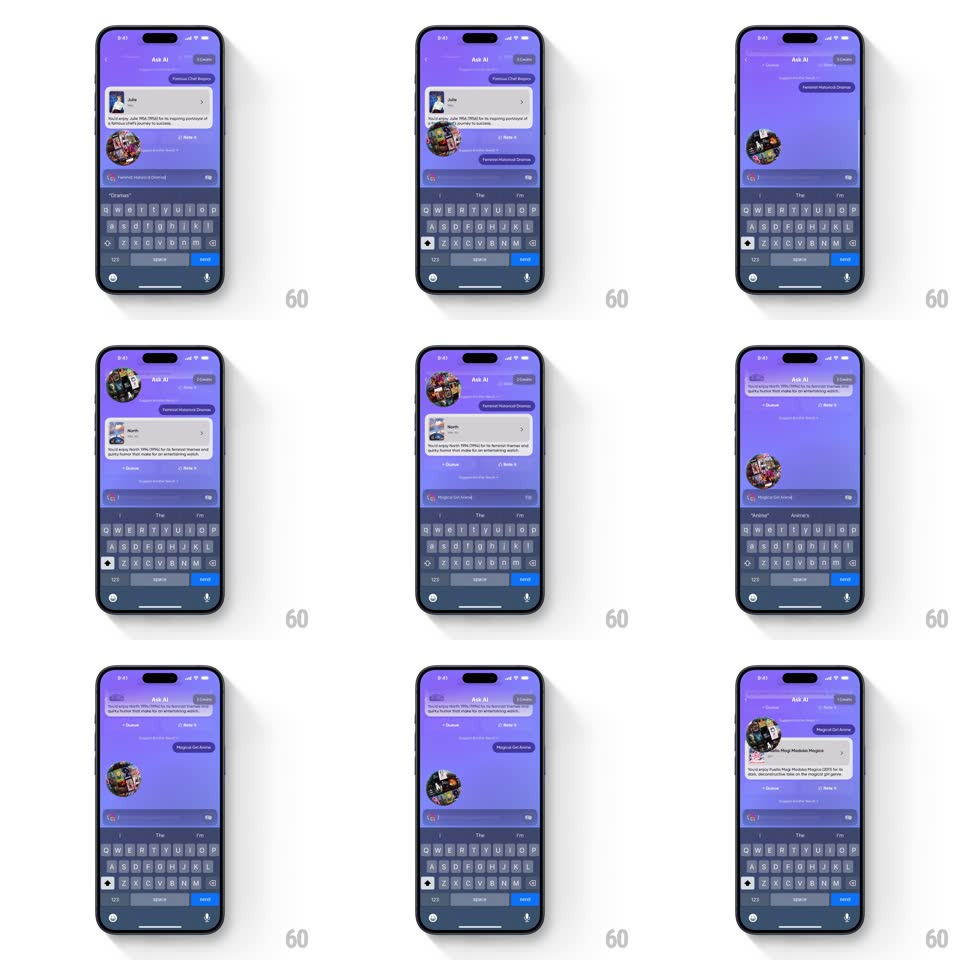

Media
Frame-by-frame

Rebuild this interaction 1:1: Queue's Ask AI random prompt - tapping the dice inserts a random prompt into the chat composer; sending it shows a 3D spinning cluster of mini posters as the thinking state, then a recommendation card slides into the thread.

Rebuild this interaction 1:1: Queue's Ask AI random prompt - tapping the dice inserts a random prompt into the chat composer; sending it shows a 3D spinning cluster of mini posters as the thinking state, then a recommendation card slides into the thread. ## Integration Integration: stack-agnostic spec - springs given as stiffness/damping, timed motions as duration + curve; map every value to your framework and animation library of choice. ## Scene Purple "Ask AI" chat: assistant message bubbles with poster cards, a suggestion chip row, a composer with dice button and send, keyboard up. Loading state: a sphere-like cluster of small movie posters rotating in 3D where the reply will land. Reply: a recommendation card with poster, title, synopsis, and "+ Queue"/"Seen it" buttons. ## Motion spec Pattern: random-fill composer with 3D loader, ~1.5s. - Dice: tapping it cycles candidate prompts rapidly in the composer text (slot-machine shuffle, 50ms per swap, 600ms) easing onto the final prompt; the dice icon spins once (360deg, 400ms). - Send: the bubble slides up into the thread (250ms, spring) and the keyboard dismisses. - Loader: the poster cluster rotates continuously (1 rev/2.4s), posters billboarding toward the viewer, scaling in from 0.6 (300ms). - Reply: the cluster scatters (posters fly out 60px and fade, 250ms) as the recommendation card slides up into its place (spring ~340/24, 350ms). ## Calibration - The cluster is built from real poster thumbnails, not placeholders. - One loader per pending reply; sending again stacks another. ## Reduced motion The loader is a static grid of posters pulsing opacity (1s); the reply fades in. ## Don't miss - The slot-machine text shuffle sells the dice - do not insert the prompt instantly. - The cluster scatters before the card enters, never overlapping it.